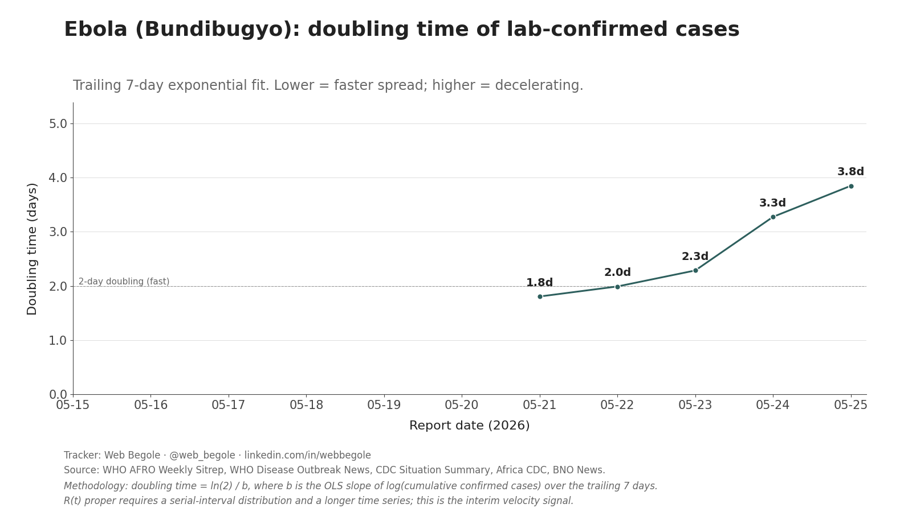

2026 Ebola (Bundibugyo) Outbreak Tracker
A daily time series of the outbreak in DRC and Uganda. Compiled from WHO, CDC, Africa CDC, and established wire services. Aggregate counts only.
Last updated: loading…
Suspected (global)
—
—
Lab-confirmed (global)
—
—
Total cases (global)
—
—
Suspected deaths
—
—
Uganda confirmed
—
—
Uganda deaths
—
—
Charts



Recent reporting
| Date | Suspected | Confirmed | Total | Susp. Deaths | Uganda Conf. | Uganda Deaths | Source |
|---|---|---|---|---|---|---|---|
| loading… | |||||||